There are no direct flights from Japan to Latin America, and connecting via North America easily pushes one-way travel past 20 hours. Long-haul flights are tiring no matter what, but I've come to feel — across several flights — that what you bring on board changes the residue your body carries off afterwards.
The catch is that economy seats just have no space. The order of priority is "compact in use," "easy to take in and out," and "easy to lose without a disaster." On those three axes, here's what I always pack.
Sleeping — an inflatable neck pillow
I'd previously bought two of the firm-style neck pillows. They support the neck, but they're just bulky, and I stopped using them.
The inflatable Tabine, on the other hand, folds up small when not in use. It doesn't have the rigid memory-foam "locks the neck in place" feel, but for light neck support it's plenty. Good fit for anyone who doesn't want extra luggage.
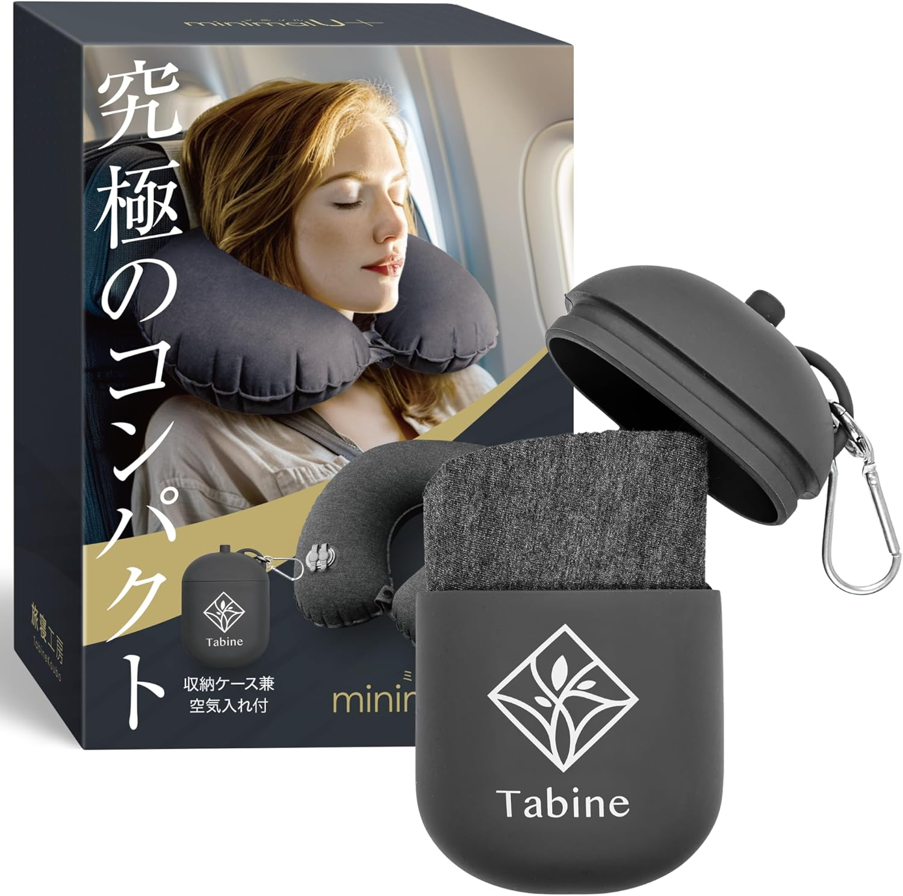
Tabine minimalU+ inflatable neck pillow
The big appeal: it gets very small when not in use. You can adjust the firmness by how much you inflate it, and while it doesn't have the "locks the neck in place" feel of memory foam, for light neck support during a flight or bus ride it's plenty. The case acts as a pump, so you don't have to use your lungs, and the carabiner lets you clip it to a bag — both nice if you don't want extra bulk.
View on AmazonBlocking light and noise — eye mask and earplugs
The cabin has more light and noise than you'd think. The neighbor's screen, engine noise, the cart rolling by — when you finally want to sleep, every disturbance lines up.
What I always have in my pouch are an eye mask and earplugs. Both are light and small, and every time I want to sleep, I'm glad I brought them. For the earplugs, picking the kind connected by a cord matters a lot — without the cord they fall out while you're sleeping and you lose one. For the eye mask, the band shouldn't be too thin or it slips around.
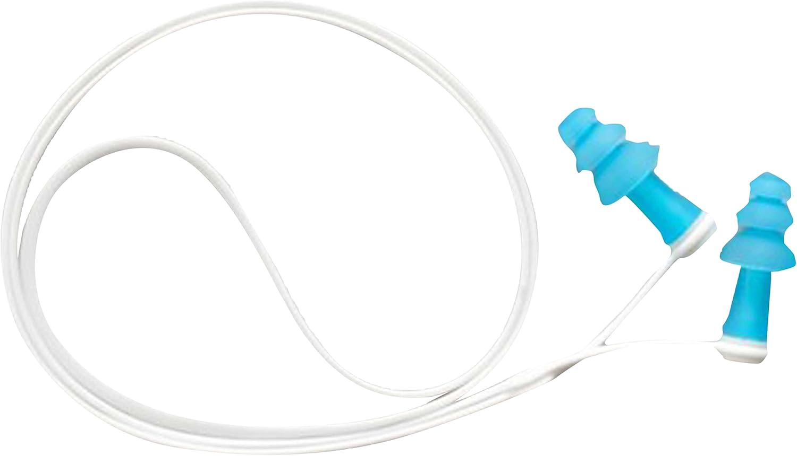
Gowell GW-1502 corded earplugs
Silicone three-step flanges fit the ear well. More importantly, the neck cord between the two pieces matters: without it, they fall out in your sleep and you lose one. Just choosing a corded pair almost eliminates "in-flight earplug loss." Silicone means you can wash them and leave them in your pouch indefinitely.
View on Amazon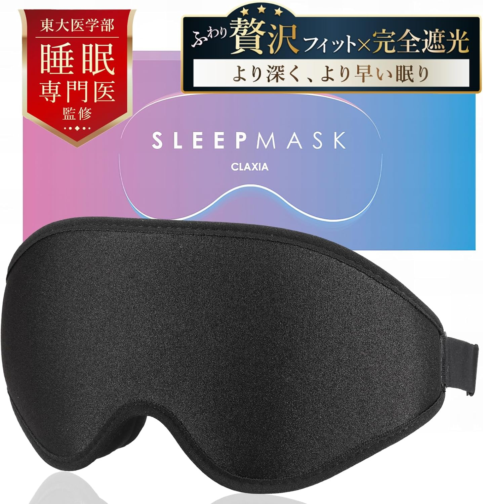
CLAXIA SLEEPMASK (3D eye mask)
The eye mask itself can be anything, honestly, but the one you buy will always be more comfortable than the thin freebie they hand out on the plane. The 3D shape doesn't press on your eye area or touch your lashes. Full blackout cuts the neighbor's screen light and stray light from the window shade.
View on AmazonMovies and audio — wired earphones and a 2-pin adapter
For everyday listening I usually go Bluetooth, but for long-haul flights I went back to wired. The trigger was dropping a Bluetooth earbud twice on a single flight. The first time it fell out while I was sleeping and the person behind me picked it up; the second time it bounced into the gap of the seat, and the flight attendant laughed, "lucky we found it."
Since then, I default to a modest wired earphone like the final E3000. The damage if you lose it is small, and not having to be on edge about them is just easier.
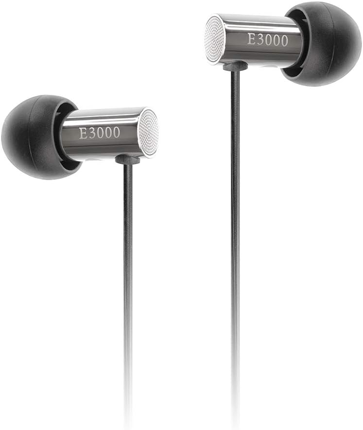
final E3000 in-ear wired earphones
Sound is solid for the price, and more than enough for in-flight monitor audio. Losing them doesn't hurt much psychologically, and after dropping a Bluetooth earbud twice in one seat, I went back to wired for long-haul. Five ear-tip sizes make fit easy.
View on AmazonSome aircraft still have 2-pin jacks on the in-flight monitor, so it's worth keeping a small adapter on hand. Cheap, light, and the kind of thing you suddenly need one day.
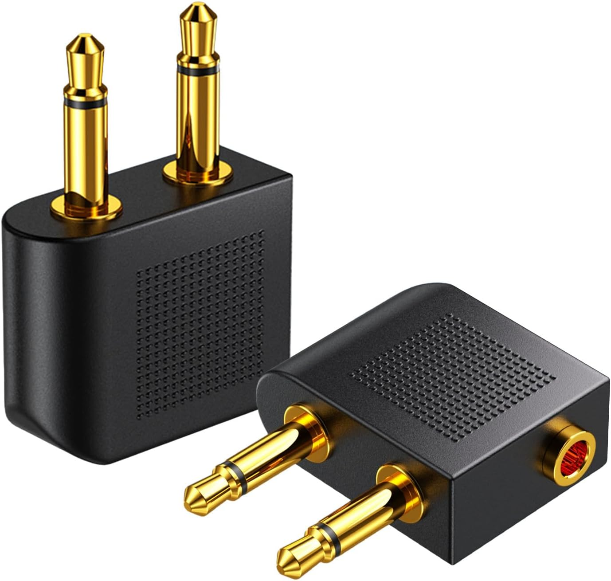
Drawheart 2-pin → 3.5 mm in-flight adapter (DH672)
Some aircraft still have a 2-pin jack on the seatback monitor. A regular 3.5 mm wired earphone won't fit, so a small adapter is reassuring to keep on hand. The 2-pack means a backup if you lose one. Cheap, light, and the kind of thing that's suddenly necessary one day.
View on AmazonFor the wireless crowd — a Bluetooth transmitter
If you'd rather watch movies on noise-cancelling wireless, there's the Bluetooth transmitter route. Plug it into the monitor's headphone jack, and it sends the audio to your wireless earbuds. Twelve South AirFly is the standard, with 2-pin support. That said, if you tend to fall asleep, the risk of losing an earbud doesn't go away — depends on your sleep style.
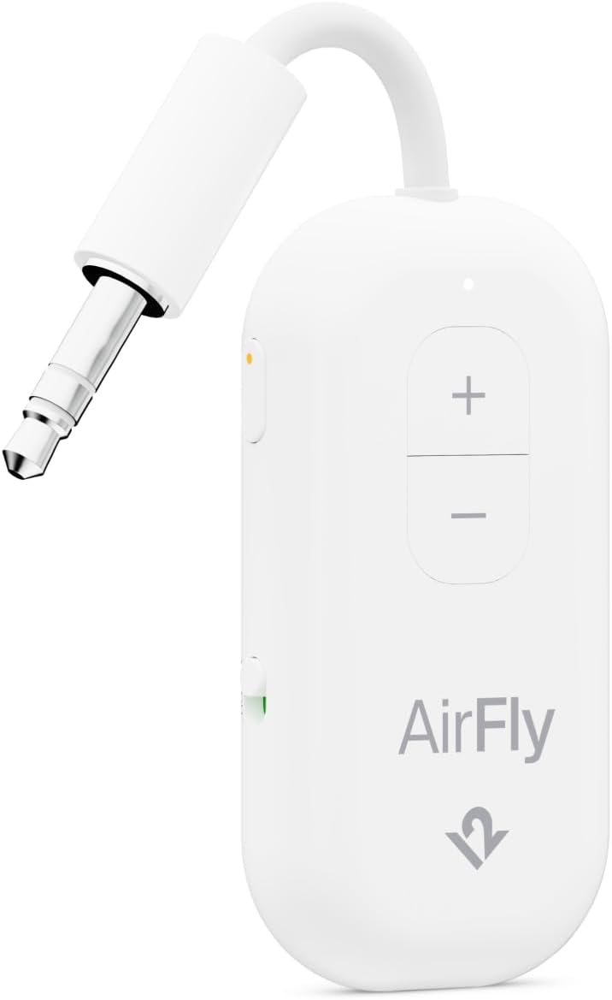
Twelve South AirFly (Bluetooth transmitter)
Plug it into the monitor's headphone jack and it sends the audio to your wireless earbuds via Bluetooth. The included 2-pin adapter means it works on any aircraft — the de facto standard in this category. Volume buttons on the body itself are a quietly nice touch.
View on AmazonWork documents — sync to iPad / phone in advance
Opening a laptop in economy is a lost battle the moment the person in front reclines. If you need to look over documents for work, the realistic move is to locally sync PDFs and slides to your iPad or phone in advance. Relying on the cloud bites you when in-flight Wi-Fi is unstable, so spending five minutes downloading before departure saves a lot of stress.
Footwear — instead of cabin slippers, just wear comfortable shoes
Some people bring slippers or sandals for the flight, but personally I find "where do I put the shoes I just took off" annoying. On the other hand, sandals alone don't work on the ground — places with cobblestone or gravel, like much of Latin America, take a toll on toes and soles.
What I've settled on lately is a two-way shoe with a heel you can crush down. Something like the KEEN HOODMOC HS, where the toe stays covered and you can wear it as a shoe with the heel up or as a slip-on with the heel folded down. Heel down on the plane for comfort, foot covered when you land. No need to carry sandals and shoes separately.
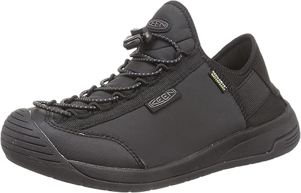
KEEN HOODMOC HS
Toe and forefoot are properly covered, and a convertible build means you can wear it as a shoe with the heel up or as a slip-on / sandal with the heel folded down. Bungee laces make on-and-off fast — heel down for comfort on the plane, foot properly covered for walking after you land. No need to carry both sandals and shoes.
View on AmazonPutting in / taking out contact lenses — alcohol wipes
Sleeping with contacts in on a long-haul flight is rough on the eyes. Most people end up taking them out partway through, switching to glasses, and putting them back in before landing.
What's essential for that is alcohol wipes. The cabin lavatories are usually crowded, and going to wash your hands is a chore in itself, so being able to disinfect your hands at the seat is reassuring. Two packs — one for the flight, one for after — is what I'd recommend. They're useful for before meals or for touching up makeup too.
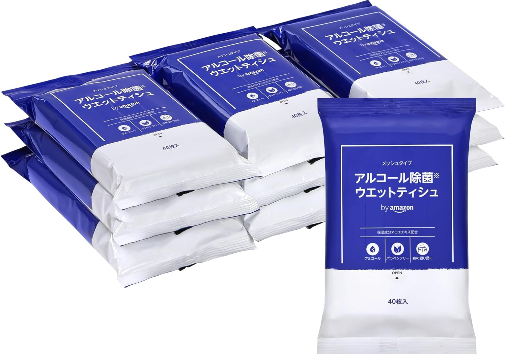
Alcohol wipes (a 100-yen shop pack works fine)
Even when the lavatory is crowded, you can disinfect your hands at the seat. One wipe before touching contacts cuts the cleanliness anxiety. Useful before meals or for touching up makeup, too. You'll use them on the trip itself, so two packs is reassuring (one for the flight, one for the destination). For the in-flight pack, individually-wrapped from a 100-yen shop is plenty — no need to be brand-loyal. Bulk packs from Amazon Basics etc. only when you want a stash at home.
View on AmazonKeep in-flight items in a small pouch
Wired earphones, 2-pin adapter, earplugs, eye mask, alcohol wipes, lip balm, eye drops, charging cable, regular medication — anything you'll use on the plane is dramatically easier to access if you group it in a small pouch and keep it in the seat pocket. The trick is a divided gadget pouch that fits the seat pocket — width that goes in, and thin enough not to bulge.
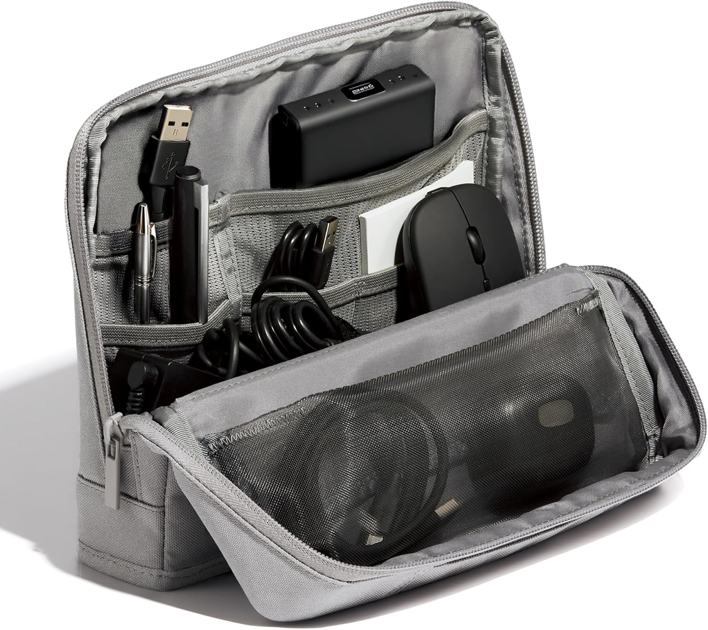
Kokuyo Gadget Pouch (AMBG-SP100M)
Personally I like the Kokuyo case — easy to organize. That said, the rule for in-flight pouches is "the thinner the better"; brand isn't really the point. Anything with dividers and mesh pockets that lets you see the contents at a glance, and that fits comfortably in the seat pocket, is fine — UGREEN, Muji mesh cases, etc.
View on AmazonHow to split luggage — large checked bag + carry-on, two-piece setup
For about a week abroad, I've settled on one large checked suitcase plus one carry-on. The combination is a large Samsonite and a carry-on-sized LOJEL.
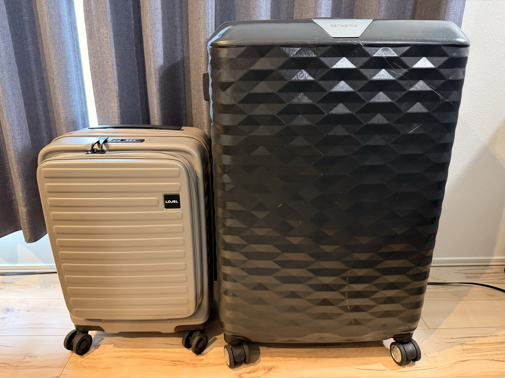
I used to think one big bag was enough, but walking between terminals at a connecting airport is a longer distance than you think. Carrying souvenirs, a jacket, and a laptop bag in your hands wears you out before you arrive. With a carry-on you have both hands free, and you can roll any extra items along.
Another big factor is protecting against lost baggage. The more connections in the route, the higher the odds your checked bag is delayed or lost — so I always put one day's change of clothes, regular medication, contact lenses, and chargers on the carry-on side. Just that habit is enough to ride out a one- or two-day baggage delay.
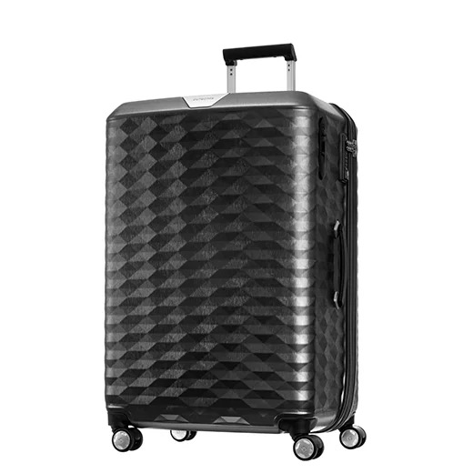
Samsonite POLYGON SPINNER 75 (109 L)
The large checked suitcase I use for week-long trips abroad. The polygon (faceted) surface is unmistakably Samsonite, and the hard shell holds up well. The model is discontinued, so if you're buying new, look at the successor or current large hard-shell lines (ESSENS / TRUNK / VOLANT, etc.).
Browse current Samsonite large models on Amazon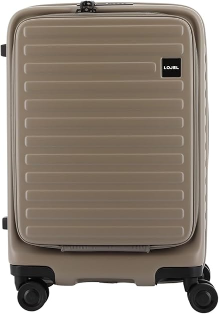
LOJEL Cubo Refresh-S (carry-on size)
My carry-on. Front-access pocket lets you grab a laptop or documents quickly, and you can roll it through connections. As lost-baggage insurance, this is where I split off one day's clothes, regular medication, contacts, and chargers.
View on AmazonWrapping up
The trick to making long-haul flights easier isn't to "buy everything." It's to try one or two things at a time, matched to your own flight style (sleep / movies / work). The result is less luggage and less in-flight stress.
Personally I won't fly without: wired earphones, 2-pin adapter, earplugs, eye mask, alcohol wipes, small pouch. The two-bag suitcase setup is a base layer. From there, depending on flight time and whether I plan to sleep, I add the inflatable pillow and the comfortable shoes. If you remember a flight where you thought "I should have brought X" — try just that one thing on the next flight. That's enough.
Even on a 20-plus hour flight, a little preparation makes a big difference in how much energy you have when you land. Don't pack everything; don't strip too far down; find the line that fits your travel style. That's the shortest path to "comfortable."